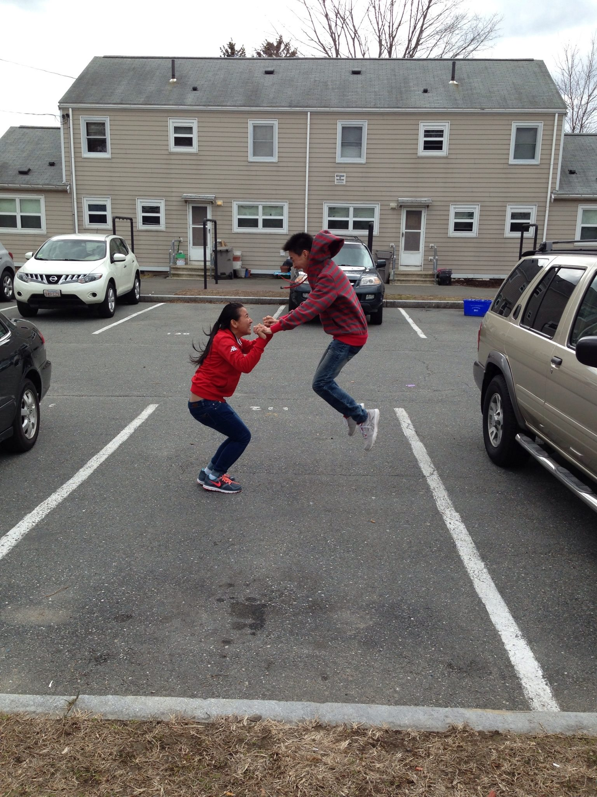
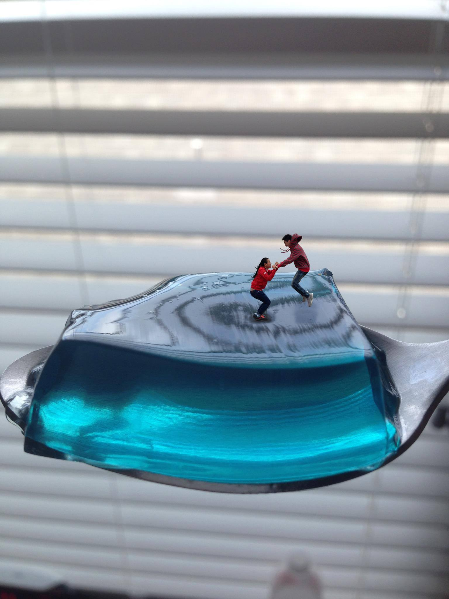

I am a senior Computer Science student of University of Houston - Downtown. I am going to tell you the 3 things I love the most. One, I love to program, that is one of the reasons why I am taking this course for my last semester here in UHD. I love C++, Python, JavaScript, and programming in general. Thus, learning HTML5 and CSS should be exciting and fun. My goal is to have an application of my own in the future. Two, I also love Math. I am pretty good at working with numbers and when I was a kid, I always pictured myself becoming a math teacher when I grew up. Although, w it’s more like a shower thought but my love for Math still remains. Three, I love photo editing. I remember when I first owned an iPhone, I took a lot of pictures. Eventually, I learned how to edit pictures by using Photoshop from watching tutorials on YouTube. You can do infinity things with photoshop, all it takes is your imagination and creativity. I’ve also learned how to edit videos and post them on YouTube. In other words, I usually play with Photoshop, and editing videos for my YouTube channel in my leisure time. Here is one of my favorite photos that I edited a long time ago, me and my sister jumping on a cube of Jell-O.
 
Use this form below to send me a message
Before
After